Activity: Modeling a machined part
This activity uses treatment feature commands, cutouts, rounds, patterns, mirror copied features, ribs, lip and hole. This activity is advanced and it might take a while to complete. There is a stopping point in the activity you can decide to continue or finish later. Pay careful attention to the instructions and illustrations.
Overview
This activity uses ordered treatment feature commands, cutouts, rounds, patterns, mirror copied features, ribs, lip and hole. This activity is advanced and it might take a while to complete. There is a stopping point in the activity where the you can decide to continue or finish later. Pay careful attention to the instructions and illustrations.
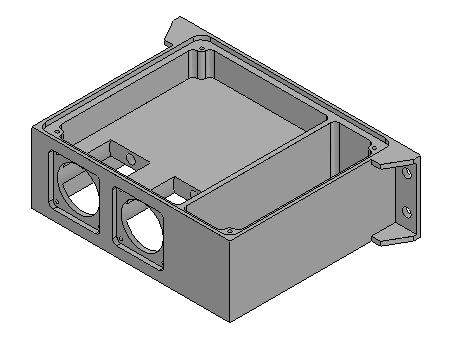
Create a new ISO Metric Part file. Save the file as machine01.par.
Make sure you are in the ordered environment.
Begin the activity by creating a rectangular extrusion as the base feature for this part.
In PathFinder, turn off the display of the base coordinate system. Turn on the display of the base reference planes.
Choose the Extrude command.
For the plane step, select the reference plane shown.
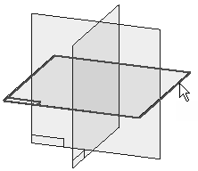
Draw the profile and center the profile at the intersection of the default reference planes.
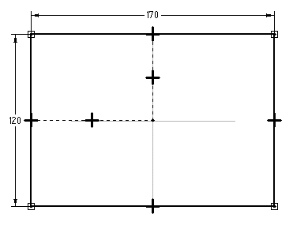
Choose Close Sketch.
Extrude the profile 50 mm below the reference plane and click Finish.
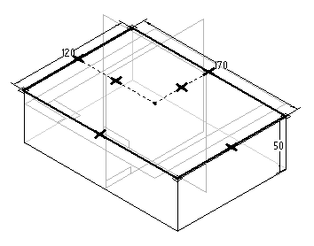
The Extrude command is still active.
Select the Coincident Plane option and orient the plane as shown.
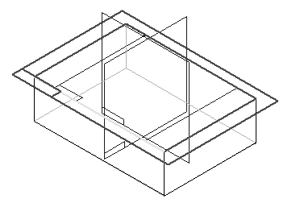
On the right side of the part, draw the profile.
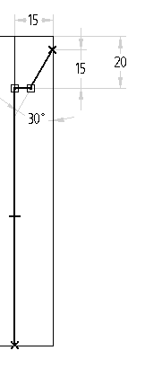
Choose Close Sketch.
Click as shown for direction to remove material.
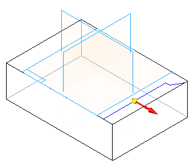
For the Extent step, on the command bar, select the Through All option and click the direction as shown.
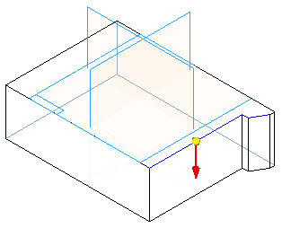
Click Finish.
Create a second cutout on a side face created by the cutout in the previous step. The cutout looks like the one shown.
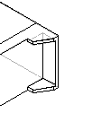
The Extrude command is still active.
For the profile plane, select the right surface shown using the Coincident Plane option on the command bar.
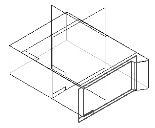
Draw the open profile.
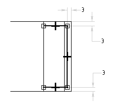
Choose Close Sketch.
On the command bar, set the Add/Cut option to Cut.
For the Side step, position the cursor so the arrow points to the inside of the profile, as shown, and click.
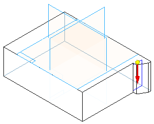
For the Extent Step, on the command bar, click the From/To extent button. Make the depth of the cutout from surface (1) to surface (2).
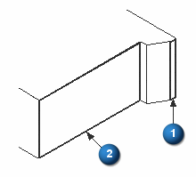
Click Finish.
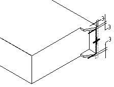
Mirror the cutouts created in the previous two steps about reference plane (1). Using this reference plane, which lies at the center of the part, ensures that the two cutouts are mirrored symmetrically on the opposite side of the part.
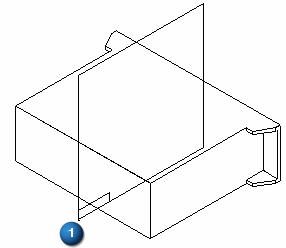
In the Pattern group, choose the Mirror command
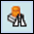
.On command bar, click the Smart button.
Select the two cutout features in PathFinder and click the Accept button.
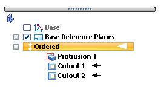
For the plane to mirror about, select reference plane (1).
Click Finish.
Create a cutout using two profiles created in a single profile step. This allows removing or adding material of a complex shape in a single step.
Choose the Extrude command.
Select the reference plane shown.
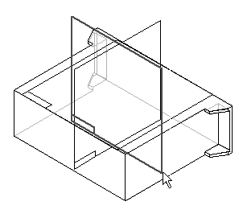
Draw and dimension the two profiles as shown. The top and bottom lines are coincident with the part edges. Notice that lines 1 and 2 have Equal relationships applied.
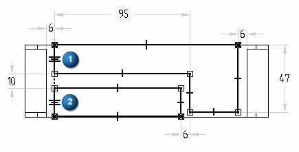
Click Close Sketch.
On the command bar, set the Add/Cut option to Cut.
For the extent step, use the Finite extent and click the Symmetric extent button. Type 108 in the Distance field and press Enter.
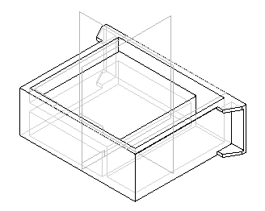
Click Finish.
Construct a rib to strengthen the interior of the part.
In the Solids group, on the Thin Wall list, choose the Rib command
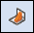
.On command bar, click the Parallel Plane option.
Select the top face as shown.
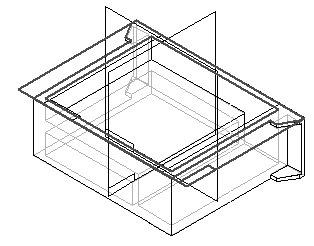
On the command bar, type 3 and position the cursor so the parallel plane is placed below the top face and click.
Draw the rib profile. Looking down from the top of the model, the profile endpoints are connected to the cutout edges.
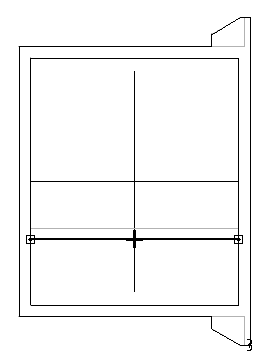
Choose Close Sketch.
On the command bar, type 3 for rib thickness.
Select the direction shown.
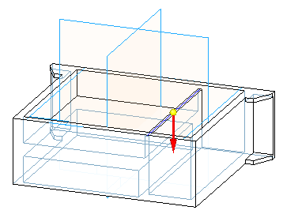
Click Finish.
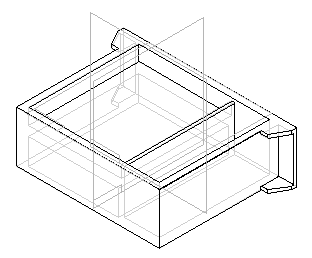
Create a groove around the top inside edge of the part. Use the Lip command. Use this command to add material to create lips or remove material to create grooves.
On the Thin Wall list, choose the Lip command
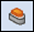
.Select the four edges shown and then click the Accept button.
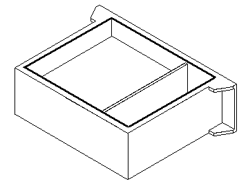
On the command bar, type 4 for the width and 3 for the height. Use the Zoom command to adequately see this rectangle. This rectangle defines whether material will be added to create a lip or removed to create a groove. Position the rectangle as shown to create the groove.
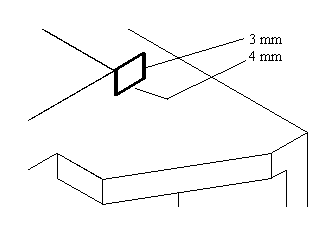
Click Finish.
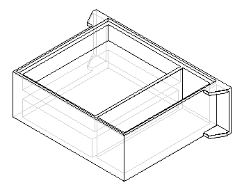
Create a circular-shaped cutout and remove a finite amount of material from the part. The Hole command could be used here, however in this step the Cut command and a circular profile is used.
Choose the Extrude command.
Select the profile plane as shown.
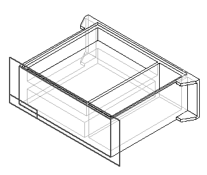
Draw and dimension the profile. Center the circle on midpoint of line (1).
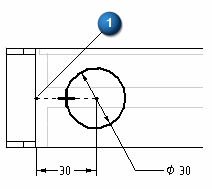
Choose Close Sketch.
In the Distance box, type 40 for the extent and position the cutout into the part.
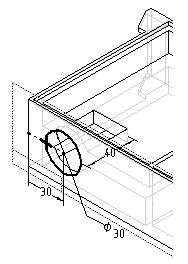
Click Finish.
Construct a hole at the rear of the cutout created in the previous step.
Choose the Hole command
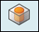
.Select the profile plane as shown.
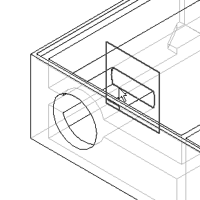
On the command bar, click the Hole Options button . Select Hole type Simple (1). Select Standard ISO Metric (2). Select Sub Type Dowel (3). Select Size Diameter 6 (4). Select the Finite extent (5) Hole extent and Hole Depth of 8. Click OK.
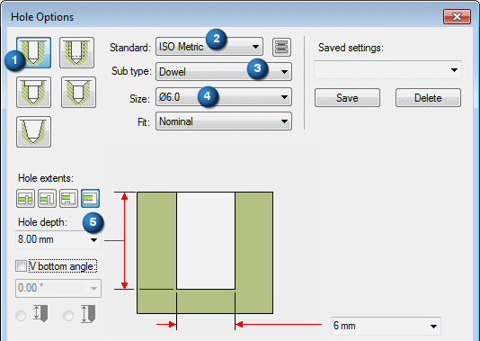
Place the hole centered on circle (1).
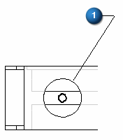
Choose Close Sketch.
Position the extent to the right as shown and click.
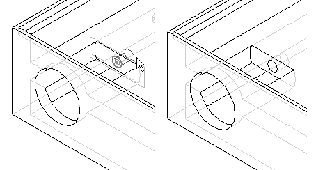
Click Finish.
Create another cutout on the part. This cutout will surround the circular cutout created earlier.
Choose the Extrude command.
Select the profile plane as shown.
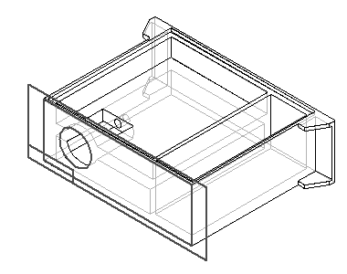
Draw and dimension the profile. Use Horizontal/Vertical and Equal relationships to center the square profile around the circular cutout from the previous step.
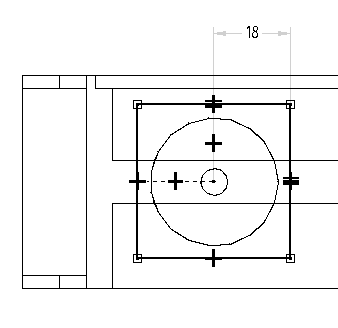
Choose Close Sketch.
Turn off Symmetric extent. Click the Finite Extent button, and type 3 in the Distance field.
Position the cursor so that material is removed from the part and click.
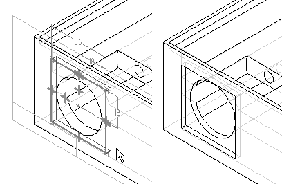
Click Finish.
Add rounds to the cutout.
Choose the Round command.
Select the four edges as shown.
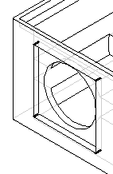
Type 3 in the Radius field, and then click the Accept button.
Click Preview and Finish.
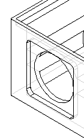
Add a series of holes to the surface created by the rectangular cutout.
Choose the Hole command.
Select the profile plane as shown.
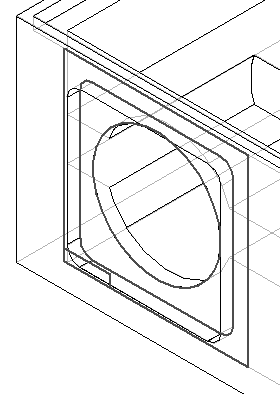
Click the Hole Options button and set the options as shown. Click OK.
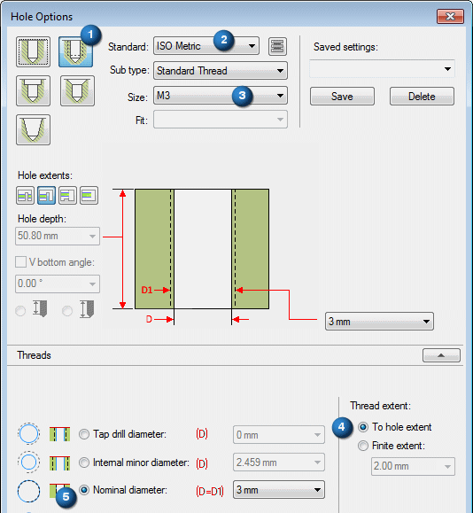
Place four holes as shown (2). Center the holes on the rounds you created in the previous step. The dashed line around the hole profile indicates a threaded hole.
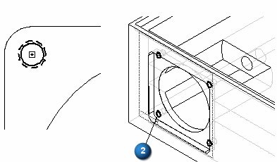
Choose Close Sketch.
Position the direction arrow to point towards the interior of the part and click.
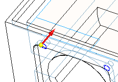
Click Finish.
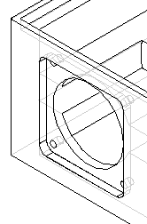
Pattern the five features, which include the circular cutout, single hole, square cutout, rounds, and series of four holes.
Choose the Pattern command and on the command bar, click the Smart option.
Select the features shown below to pattern.
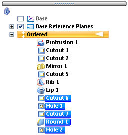
Click the Accept button.
Select the pattern reference plane as shown.
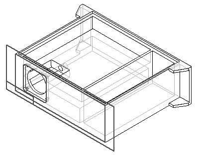
On the command bar, type the following patterning parameter values.
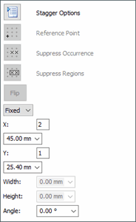
Define the pattern profile by selecting the first point in the center of the small hole and then position the rectangle as shown.
Choose Close Sketch.
Click Finish.
Use the Extrusion command to add material in the corner of the part. It serves as a boss for the model.
Choose the Extrude command.
Select the profile plane as shown.
Draw and dimension the profile.
Choose Close Sketch.
Position the direction arrow as shown and click.
For the extent step, on the command bar, click the Through Next button. Position the cursor so that the material is added below the profile as shown and click.
Click Finish.
Apply a round to the material added in the previous step.
Choose the Round command.
Select the edge shown.
Type 3 in the Radius field, and then click the Accept button.
Click Preview and Finish.
Choose the Hole command.
Select the profile plane as shown.
Click the Hole Options button and set the options as shown. Click OK.
Place the hole concentric with the arc.
Choose Close Sketch.
Position the cursor so that the extent is defined as shown and click.
Click Finish.
Mirror the features created in the previous steps. These include the rectangular boss, round, and hole.
Choose the Mirror Copy Feature command.
Click the Smart button.
In PathFinder, select the last three features constructed, protrusion, round and hole. Click the Accept button.
Select the reference plane shown as the plane to mirror the features about.
Click Finish.
Choose the Mirror Copy Feature command.
Click the Smart button.
In the PathFinder, select the protrusion, round, hole and mirror features. Click the Accept button.
Select the reference plane shown as the plane to mirror the features about.
Click Finish.
In order to save time, you may stop at this point. The remainder of the activity covers adding more rounds and holes. Save the file at this point and finish later.
Choose the Round command.
Select the edges shown.
Type 3 in the Radius field. Click the Accept button.
Click Preview and Finish.
Add rounds to more of the interior edges of the part.
Choose the Round command.
Select the edges shown.
Type 6 in the Radius field. Click the Accept button.
Click Preview and Finish.
Choose the Hole command.
Select the profile plane as shown.
On the Main toolbar, choose Fit.
Click the Hole Options button. Select Simple hole type. Select Standard ISO Metric. Select Sub Type Dowel. Select Size Diameter 6.0. Click OK.
Place and dimension four holes.
Choose Close Sketch.
Click the Through All button.
Position the cursor so that the direction arrow is displayed as shown, and click.
Click Finish.
Close and save the file. This completes the activity.
In this activity you modeled a machined part that included cutouts, rounds, patterns, mirror copied features, ribs, lip and holes. In this activity, non profile based features were used to more efficiently model the machined part.
-
Click the Close button in the upper–right corner of this activity window.